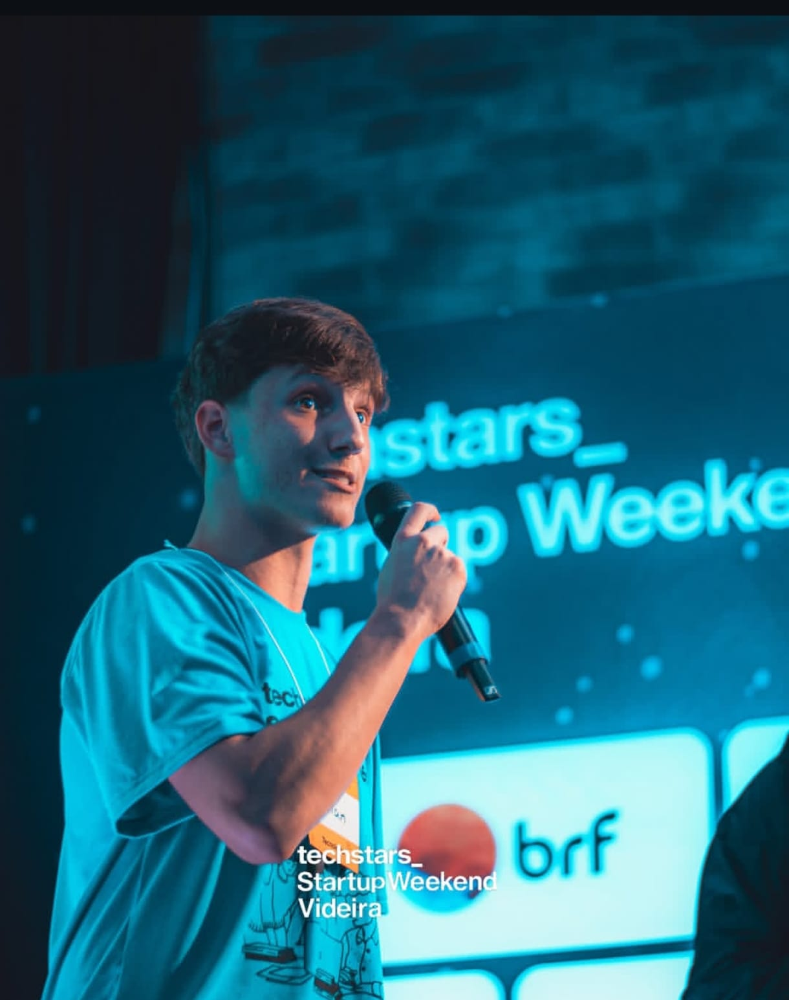
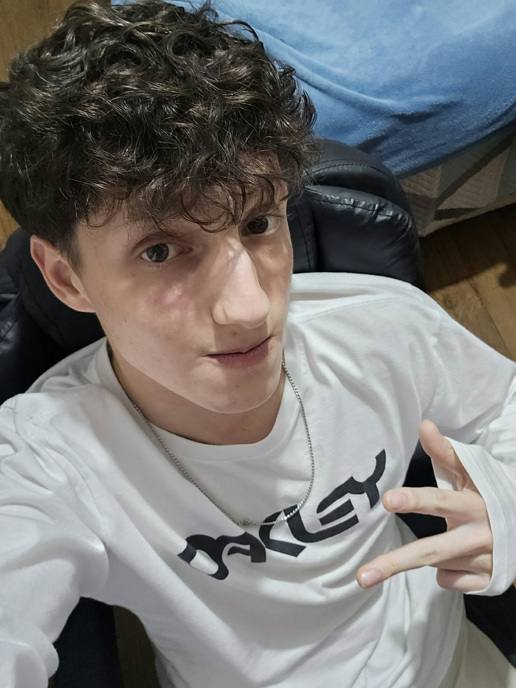
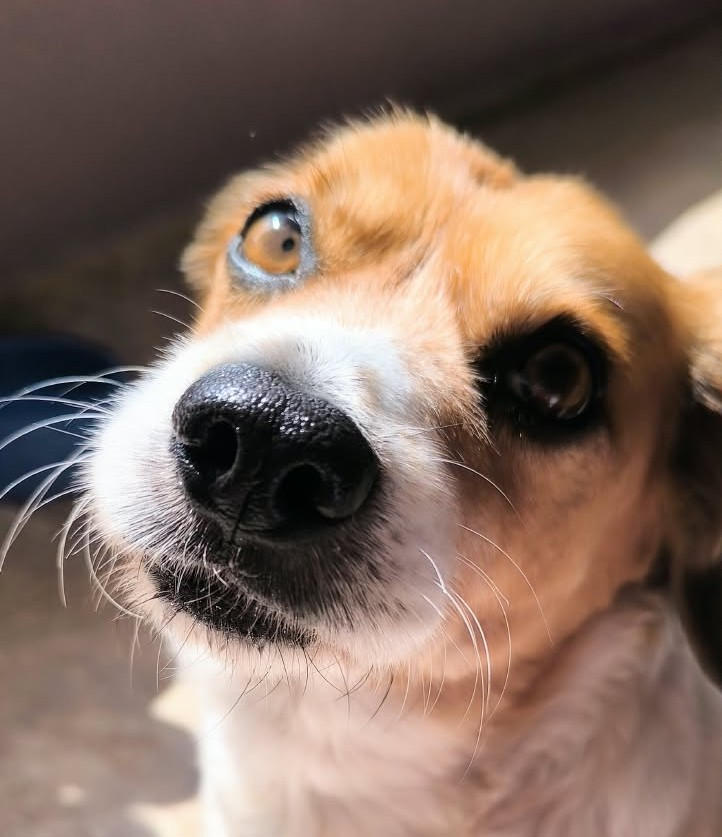
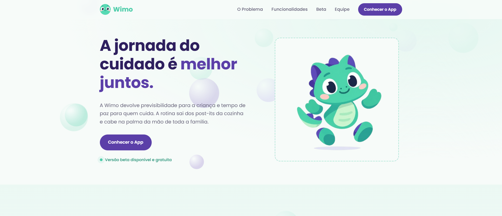
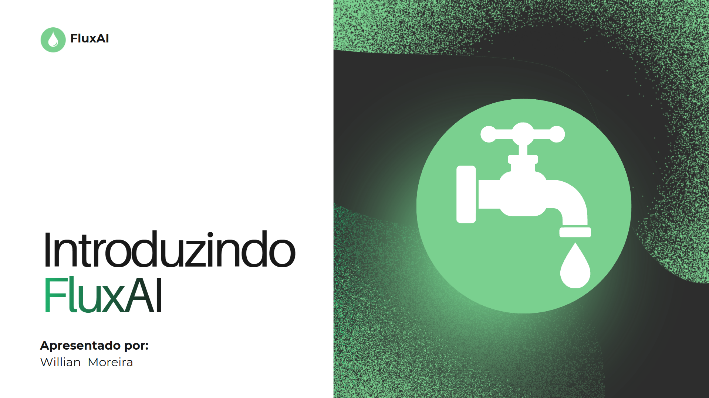
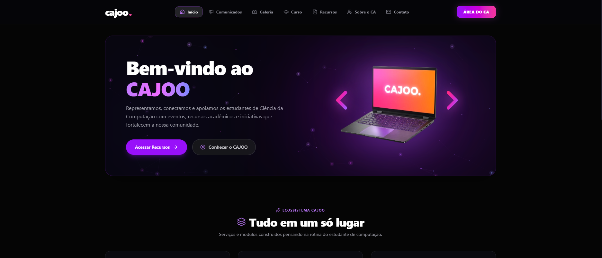
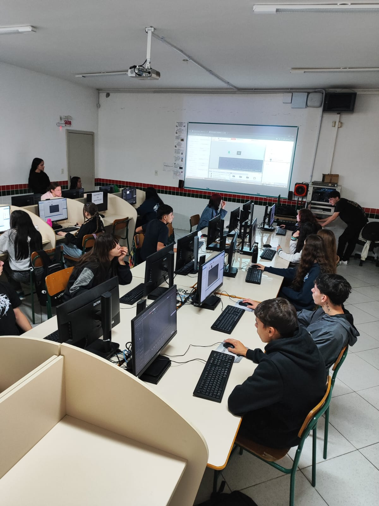
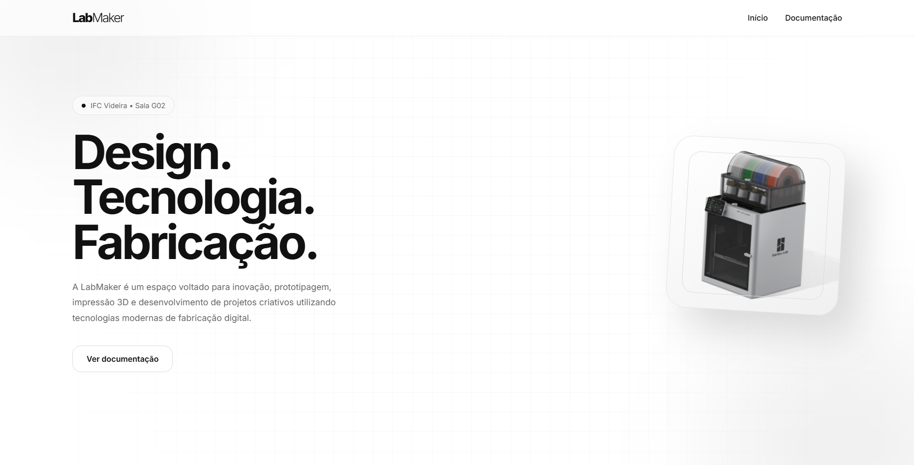

Estudante de Ciência da Computação e Técnico em Informática pelo IFC Videira. Minha jornada na tecnologia passa por desenvolvimento full-stack, design e exploração de Inteligência Artificial com modelos locais (Ollama, Llama3, Claude). No CECOM (IFC), atuo na produção audiovisual e comunicação.
Olá, eu sou
Willian Moreira.
Desenvolvedor de Software
Tenho 19 anos, sou de Videira-SC e uno lógica de programação com olhar artístico para criar aplicações web, mobile e experiências audiovisuais.

Sobre mim
Código, câmera e música no mesmo lugar.


Fora das telas
- Música: toco saxofone, flauta transversal e cajón na Banda Jovem Sol-lá-si.
- Treino: dedicado à hipertrofia, com disciplina de rotina.
- Mentalidade: me inspiro na filosofia estoica para produtividade.
- Companhia: o Bob, meu cachorro, que aprova (ou não) cada commit.
Habilidades e ferramentas
Do código à edição de vídeo, o que uso no dia a dia.
Desenvolvimento
Aplicações web e mobile, do banco de dados à interface.
Infra e IA
Ambientes em contêiner, versionamento e IA rodando localmente.
Audiovisual e Design
Cobertura de eventos, edição, tratamento de imagem e identidade visual.
Projetos em destaque
Alguns trabalhos de pesquisa, extensão, eventos e produto.

Nascer SC
Wimo
Plataforma de suporte ao autismo, focada em gerenciamento de tarefas e bem-estar.
Confira nossa landing page
Ideathon Engenharia Elétrica
FluxAI
Sistema automatizado de gestão de perdas de água, unindo CLPs e IA preditiva.
Ver no Canva

Rota do Código
Projeto de programação de jogos com GDevelop para a rede pública.
Mais sobre o projeto
Experiência e formação
Onde estudei e onde trabalho.
Experiência
2026 - Atual
Estagiário no CECOM, IFC Videira
Cobertura audiovisual, comunicação e design. Também na equipe de organização da Semana Acadêmica de Computação e no staff do Startup Weekend Videira 2026.
Formação
2026 - Atual
Ciência da Computação
IFC Videira.
Concluído em 2025
Técnico Integrado em Informática
IFC Videira.